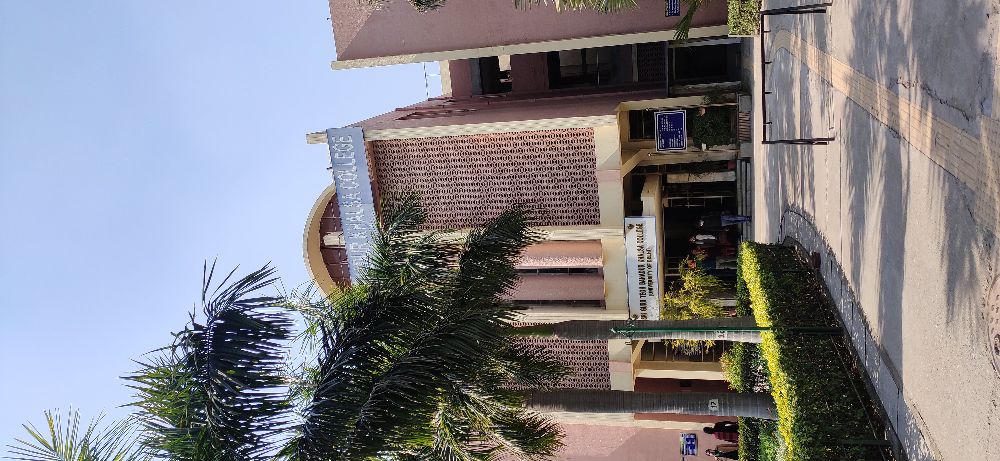
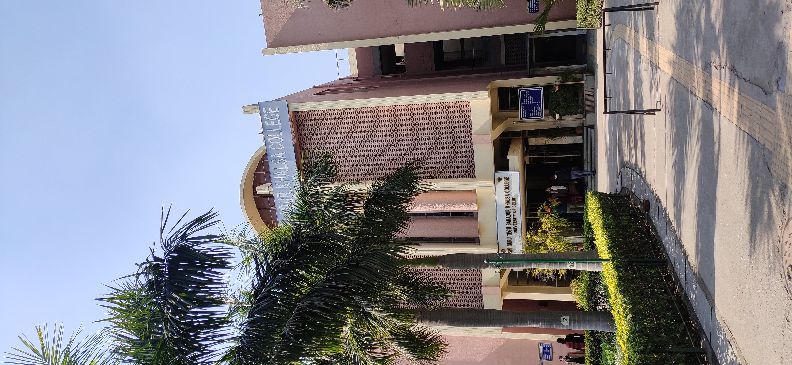

UNIVERSITY OF DELHI

Dr. Jaswinder Singh is presently the Principal of Sri Guru Tegh Bahadur Khalsa College, University of Delhi. He has done his post-doctoral in Impact of Irrigation on Some Aspects of Agricultural Development: A Case Study of Nagarjunasagar Command Area, Andhra Pradesh. Managerial Economics Dreamtech Press, Sikhs and New Delhi: (ed) 2010, Guru, Granth and Panth: situating Sikh Movement in South Asian context: (concept note), are some of the books that have been authored by Dr. Singh. He has also written various articles.
| 8:30 | 9:30 | 10:30 | 11:30 | 12:45 | 1:45 | 2:45 | 3:45 | |
|---|---|---|---|---|---|---|---|---|
| mon | Operating System | Operating System | Data Structures | Data Structures | GE | GE | GE | GE |
| tue | Operating System | Operating System | Data Structures | Data Structures | GE | GE | GE | GE |
| wed | Operating System | Operating System | Data Structures | Data Structures | GE | GE | GE | GE |
| thur | Operating System | Operating System | Data Structures | Data Structures | GE | GE | GE | GE |
| fri | Operating System | Operating System | Data Structures | Data Structures | GE | GE | GE | GE |
| sat | Operating System | Operating System | Data Structures | Data Structures | GE | GE | GE | GE |
 
